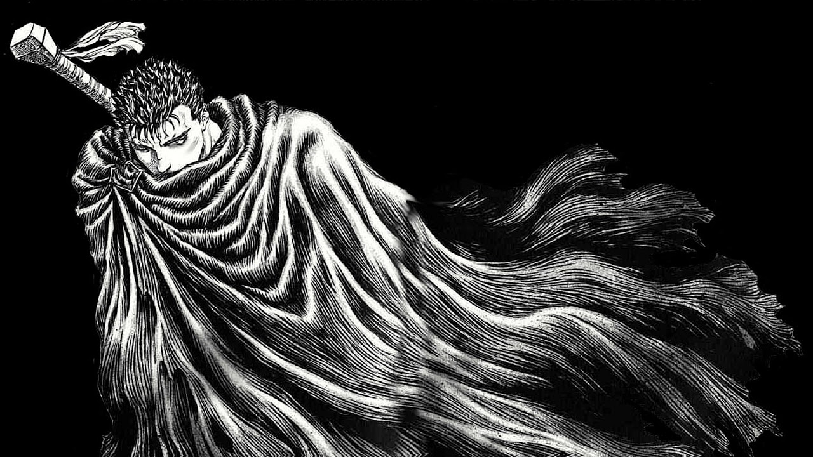

O mangá Berserk é escrito e ilustrado por Kentaro Miura, e é publicado pela editora Hakusensha na revista Young Animal. A primeira publicação de Berserk foi em agosto de 1989, sem numeração a princípio, vindo a ter seu primeiro capítulo numerado depois dos 2 primeiros arcos, já tendo ultrapassado mais de 360 capítulos lançados atualmente.
Seu nome é Guts, o Espadachim Negro, um guerreiro temido de quem se fala apenas em sussurros. Portador de uma espada gigantesca, uma mão de ferro e as cicatrizes de incontáveis batalhas e torturas, sua carne também é indelevelmente marcada com A Marca, um símbolo profano que atrai as forças das trevas para ele e o condena como seu sacrifício. Mas Guts não vai aceitar seu destino deitado; ele vai abrir uma faixa carmesim de carnificina através das fileiras dos condenados, e qualquer outra pessoa tola o suficiente para se opor a ele! Acompanhado por Puck, o Elfo, mais um aborrecimento do que um companheiro, Guts implacavelmente segue um caminho escuro e manchado de sangue que leva apenas à morte... Ou vingança.
No início de Berserk , Guts é apresentado como um protagonista genuinamente desagradável . Ele é brutal, cruel e cheio de tanto ódio que o público não poderia simpatizar com ele . Na metade do primeiro volume do mangá, ele pegou uma carona em um carrinho de viagem com um velho padre e sua filha, abrindo-se para eles enquanto apreciava sua hospitalidade. A garota sorriu, oferecendo-lhe vinho, que ele aceitou. Esta foi a primeira vez que o público pôde ver o lado mais suave de Guts. Tragicamente, a carroça foi atacada por esqueletos, seus cadáveres reanimados por espíritos que possuíam seus corpos. Quando a menina foi morta, ela também foi possuída e matou seu pai. Chocado, Guts a deixou chegar muito perto e ela o esfaqueou. As entranhas cortaram seu corpo em dois antes de dobrar, vomitando e incapaz de escapar das memórias da garota sorrindo momentos antes.
Guts nasceu do corpo de uma enforcada e foi adotado por uma mulher chamada Shizu, que recentemente perdeu seu próprio filho. Shizu era a parceira românticoade Gambino, chefe de uma empresa mercenária. Ela morreu alguns anos depois e Gambino se tornou a figura do pai adotivo de Guts. O pequeno Guts adorava esse homem grande e forte, idolatrando-o. Tragicamente, Gambino era cruel, insensível e abusivo. Assistir Guts dar todo o seu amor e devoção a alguém que o maltratou é uma experiência angustiante para os leitores, repleta da ternura da inocência infantil e da insensibilidade das realidades adultas.
Esta seção trata de um assunto perturbador e difícil. A cena em questão também é muito discutida entre os fãs e foi um ponto de virada para a jornada de Guts. Na noite após sua primeira batalha, Gambino vendeu Guts para outro mercenário. Houve repercussões que moldaram sua vida nos anos seguintes. No dia seguinte, Gambino negou qualquer conhecimento disso. Um pouco depois, Guts assassinou o mercenário que o havia agredido. Anos mais tarde, Gambino, embriagado, atacou Guts e confessou sua própria cumplicidade. Isso levou Guts a matar seu pai adotivo e depois fugir do bando de mercenários, perseguido pelas pessoas com quem ele passou toda a vida.
Guts eventualmente se juntou a outro grupo de mercenários, o Band of the Hawk. O líder era Griffith, um jovem bonito que era tão carismático quanto filosoficamente brilhante, mas com a destreza na batalha e o gênio tático necessários para ser um grande líder militar. Griffith desenvolveu um vínculo estreito com Guts quando os dois se tornaram melhores amigos . Embora isso não seja capturado em um único momento, uma e outra vez, Griffith abriu seu coração e mente para Guts. Esses momentos em que eles falaram – e onde Griffith monologou – foram inspiradores , comoventes e cheios de calor.
Um dos pontos de inflexão mais tristes e reveladores do Arco da Idade de Ouro ocorre quando Guts e seu colega capitão mercenário Casca são separados do resto do Bando do Falcão. Ela estava com febre e ele estava ferido. Eles se refugiaram em uma caverna para se esconder da chuva e, enquanto lá, Casca revelou segredos de seu passado. Ela contou a Guts sobre como Griffith a resgatou quando criança, e foi por isso que ela se juntou aos Hawks. E ela revelou um dos sacrifícios pessoais extremos que Griffith tinha feito para ajudar a garantir recursos vitais para os Hawks. Casca – que sempre foi obstinada, teimosa e hostil com Guts – se permitiu ser vulnerável. Isso levou os dois a formarem uma amizade íntima e profunda.
Guts era um solitário, um homem que se definia pelo uso da espada . Os Hawks lhe deram amigos e uma comunidade, mas também o tornaram complacente, e ele precisava encontrar seu próprio caminho como indivíduo. Depois que os Hawks conquistaram a vitória decisiva que encerrou uma guerra de um século entre Midland e Chuder, Guts decidiu partir por conta própria. Um por um, ele disse adeus. No entanto, Griffith não o deixou ir. Na verdade, Griffith nutria sentimentos românticos por Guts e estava com o coração partido por essa suposta traição . Não querendo deixar Guts partir, ele puxou sua espada. Os dois duelaram e Guts venceu facilmente, quebrando a espada e o coração de seu melhor amigo com um único golpe, mas poupando Griffith de qualquer lesão corporal séria.
Depois de passar um ano examinando a alma, Guts voltou ao Band of the Hawk quando soube que todo o grupo de mercenários havia sido declarado fora da lei e estava sendo caçado pelos exércitos de Midland. Ele os salvou de um ataque noturno, então ele e Casca tiveram um momento a sós no topo de um penhasco arborizado. Ela o atacou, furiosa por ele ter partido. Ela revelou que Griffith, devastado após a partida de Guts, cometeu um ato de traição que resultou em sua captura e na caça aos Hawks. Guts permitiu que ela o ferisse, o que encerrou a batalha. Dominado pela emoção depois de um ano fugindo, ela tentou pular de um penhasco, mas ele a segurou. E então, enquanto ele a abraçava, eles se beijaram e começaram a fazer amor. Mas isso desencadeou uma memória traumática quando Guts de repente teve flashbacks da noite após sua primeira batalha. Tremendo, ele disse a ela o que havia sofrido. Cada um se permitiu ser vulnerável, abrindo suas feridas, e então eles finalmente começaram a se curar.
Por cometer traição ao seduzir a Princesa Charlotte, Griffith foi preso na Torre do Renascimento, onde foi torturado. Os Hawks lançaram uma missão de resgate com a ajuda da princesa. Eles esperavam que, uma vez que tivessem salvado seu líder, ele pudesse ajudar a restaurar os Hawks à sua antiga glória. Em vez disso, o grupo que se infiltrou na torre encontrou um homem frágil e quebrado, seus tendões cortados, sua língua removida, toda sua vitalidade destruída. Griffith ainda não havia morrido, mas qualquer esperança de um futuro melhor se foi.
O Eclipse é uma das cenas mais infames da história do anime e mangá. É exatamente aí que Goku se tornou um Super Saiyan em Dragon Ball Z ou a perseguição de motocicleta no início de Akira . A premissa é simples: Griffith fez um pacto com quatro seres sobrenaturais, a Mão Divina, e sacrificou todos os membros do Bando do Falcão. Ele passou por uma apoteose sombria quando seu corpo quebrado renasceu como Femto, o mais novo membro do Godhand. Os Hawks foram dilacerados por demônios chamados apóstolos. Guts matou tantos apóstolos quanto pôde, mas foi subjugado. Aí Femto torturou Casca só para fazer Guts assistir. Os dois foram resgatados por outro ser sobrenatural conhecido como o Cavaleiro Caveira. Este é um breve resumo dos eventos. Mas os momentos horríveis que levaram ao Eclipse, a tragédia da queda de Griffith, a morte de todos os personagens que compartilharam essa jornada juntos – tais detalhes não podem ser resumidos tão facilmente. Na sequência, Guts e Casca enlouqueceram.
Além de Guts e Casca, um outro membro dos Hawks sobreviveu – um adolescente brilhante e trabalhador chamado Rickert. Ele não estava presente para o Eclipse, então ele escapou da devastação. Guts nunca disse a ele o que tinha acontecido, mas ele descobriu. Então, Griffith renasceu novamente, não como Femto, mas como o “Falcão da Luz”, um ser messiânico que unificou humanos e apóstolos. Rickert viajou para ver seu velho amigo e confrontá-lo sobre o que aconteceu. Toda a sua história compartilhada – o bom e o ruim – chegou ao auge, e Rickert finalmente teve o encerramento que merecia.